Dizi
La Casa De Papel
Bir suç dehası planını gerçekleştirmek
üzere polisi ustalıkla yönlendirirken sekiz
hırsız, rehineler alarak kendilerini İspanya
Kraliyet Darphanesine kilitler.
Dizi
Stranger Things
Ufak bir kasabada küçük bir çocuk
kaybolunca, gizli deneyler, korkutucu
doğaüstü güçler ve tuhaf bir küçük kızın
da parçası olduğu bir gizem ortaya çıkar.
Dizi
See
Uzak gelecekte insanlık görme duyusunu
kaybetti. Jason Momoa, kabilesini tehdit
altındaki bir kraliçeye karşı koruması
gereken efsanevi görme yeteneğiyle doğan
ikizlerin babası olarak rol alıyor. Alfre
Woodard da başrolde.

Dizi
Upload
Emmy ödüllü Greg Daniels'tan (The Office, Parks & Rec)
komik yeni bir bilim kurgu komedi geliyor. Gelecekte
insanlar bilinçlerini lüks bir dijital öbür dünyaya
yükleyebilirler. Parti çocuğu Nathan, sanal bir tesise
yüklendiğinde, müşteri hizmeti "melek" olarak başlayan,
ancak arkadaşlığı, sevgiyi ve amacı bulmasına yardım
ettikçe çok daha fazlasını yapan yeryüzündeki Nora ile
tanışır.